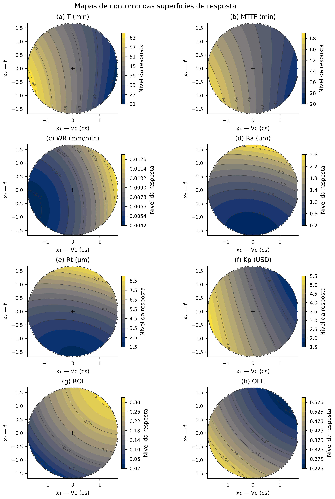

A1 — Mapas de contorno das superfícies de resposta



Caption / Legenda
Avaliação visual dos coeficientes quadráticos congelados no plano x₃=0, dentro da seção circular da esfera. Cada resposta usa sua própria escala em valores naturais; cores entre respostas não são quantitativamente comparáveis. A linha tracejada delimita a seção e a cruz marca o centro. Não houve novo ajuste RSM.
Data / Dados
A1 — Response-surface contour maps


Caption / Legenda
Visual evaluation of the frozen quadratic coefficients on the x₃=0 plane within the circular sphere section. Each response uses its own natural-value scale; colors across responses are not quantitatively comparable. The dashed curve delimits the section and the cross marks its center. No RSM was refitted.